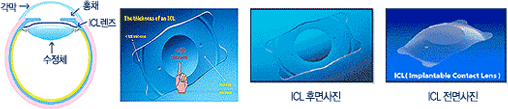
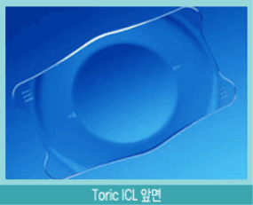
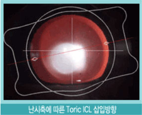

- HOME
- ICL*TORIC ICL
ICL
-
ICL
- 콘택트렌즈를 아예 눈안에 영구적으로 넣어 시력을 교정하는 ICL(안내렌즈삽입술:Implantable Contact Lens)입니다.
- 
- 코멘트
-
- ICL에 대한 환자들의 관심은 기존의 시력교정술과 크게 다릅니다. 라식이 “안경을 쓰느냐, 벗느냐” 선택의 문제라면, 초고도 근시 환자에게 ICL은 필수의 문제입니다. 이들은 안경을 써도 최대 시력이 시력표상 0.5밖에 나오지 않아 일상생활이 매우 불편하기 때문입니다.
-
ICL 장점
- 우리 함께 ICL의 장점을 알아 보아요~
-
- - 라식이나 라섹 등 레이저로 각막을 깎아내는 수술과 달리 각막을 그대로 보존하면서 깨끗하고 안정적인 시력 회복이 가능합니다.
- - 라식이 불가능한 초고돈시, 각막두께가 얇은 경우에도 시력 교정이 가능합니다.
- - 고도근시의 경우 각막을 레이저 수술로 많은 양의 각막을 절삭하는데 따른 위험이 없습니다.
- - 라식에서 발생할 수 있는 각막절편 이탈, 각막돌출증 같은 부작용이 없습니다.
- - 안구건조증이 악화되지 않고, 야간 눈부심이나 빛 퍼짐등의 불편함이 거의 없습니다.
- - 근시 퇴행이 거의 없으며 안정적인 시력을 유지합니다.
- - 투명수정체 적출술의 경우에서 볼 수 있는 원거리 근거리 조절 능력의 상실에 대한 염려가 없고, 망막박리위험성이 거의 없습니다.
- - 수술 결과에 문제가 있는 경우 눈 속 렌즈를 제거하면 수술 전 눈 상태로 복귀가 가능합니다.
-
ICL 단점
- 우리 함께 ICL의 단점을 알아 보아요~
-
- - ICL렌즈를 포함한 소모품 비용이 고가여서 수술비용이 비싼 편입니다.
- - 극히 드물지만 렌즈가 우리 눈 속의 수정체와 닿아 백내장이 올 수 있습니다. 그러나 본원에서는 백내장 수술 경험이 많은 의사가 수술을 집도하므로 미리 이런 경우를 예방한 시술을 하게 됩니다.
- - 눈 속 방수의 흐름을 방해하여 녹내장 등의 질환이 유발될 수 있습니다.
- - 이런 점을 막기 위해 홍채절제술로 미리 방지합니다.
- - 렌즈의 크기가 안 맞을 수도 있습니다. 이 경우는 재수술로 문제점을 해결할 수 있습니다.
- - ICL수술은 근시와 원시가 교정이 가능하지만, 난시 교정이 불가능합니다.
- HOME
- ICL*TORIC ICL
TORIC ICL
-
TORIC ICL이란?
- 수술방법 및 원리는 기존ICL과 동일하지만, 렌즈의 난시 방향과 눈의 난시 방향을 잘 맞추어 이식함으로써, 단 한번의 시술로 근시 및 난시가 정확하게 교정됩니다.
-  
- 코멘트
-
- Toric ICL수술은 라식이나 라섹등의 레이저 시력교정보다 좋은 결과를 보이고 있으며, 차세대 시력교정술로 각광 받고 있습니다.
-
Toric 수술의 장점
- 우리 함께 Toric ICL의 장점을 알아 보아요~
-
- - 고도난시일 경우 한번의 수술로 더 선명한 시력을 얻을 수 있으며, 야간 빛번짐, 달무리 현상이 적습니다.
- - 안약을 이용한 국소마취만으로 수술이 간단합니다.
- - 3mm의 적은 절개로 봉합없이 수술이 이루어지므로, 빠른 회복을 보입니다.
- - 절개창이 넓지않아 수술로 인한 난시발생 가능성이 적습니다.
- - 렌즈로 인한 문제발생시 제거가 용이합니다.
-
Toric 수술의 단점
- 우리 함께 Toric ICL의 단점을 알아 보아요~
-
- 전방깊이가 2.8 mm 이상이 되어야 가능합니다.
- 수술전 홍채성형술을 받아야 합니다. (녹내장 예방)
- 수술 후 안압관리가 필요합니다.
- 정해진 도수범위까지만 교정이 가능합니다.
- 수술의 전문성이 필요합니다.
- UBM( 초음파생체현미경)측정 하지 않을시 사이즈가 맞지않아 재수술가능성이 있음